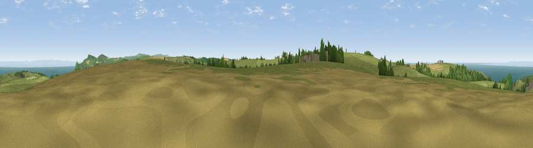

Viewpoint near Berrynarbor
#2790 in England · top 12% of its area beats it · near BerrynarborWhere it is
The exact computed spot (SS 54188 44700). Click the marker for map links.
The view, rendered

A 360° render of this exact spot computed from the terrain model, tree cover and land cover — summer colours, afternoon light, calibrated against photographs of famous viewpoints. Real trees, hedges and buildings will differ in detail.
The panorama
Grey silhouette: terrain skyline in each direction (720 bearings, Earth curvature and refraction included). Dashed green: skyline with trees (+15 m) and buildings (+8 m) as obstacles. Blue strip: how far the ground is visible on each bearing.
Where the view opens
Wedge length = distance to the farthest visible ground on that bearing (vegetation-aware). Rings at 10, 25 and 50 km.
What fills the view
57% grassland · 25% water · 12% cropland · 6% woodland
Angular shares of the visible panorama (visual magnitude), not map area. Landscape diversity 0.48 (0–1 Shannon).
Key numbers
More beautiful places nearby
The staircase of upgrades: each row has a higher view potential than everything closer. Driving times are estimates from straight-line distance, calibrated against real road routing — check an actual route before setting out.
| Place | Direction | Drive | Score |
|---|---|---|---|
| Viewpoint near Berrynarbor | ENE · 0 km | ~1 min | 78.3 |
| Viewpoint near Berrynarbor | N · 3 km | ~7 min | 81.6 |
| Viewpoint near Berrynarbor | NE · 3 km | ~8 min | 81.8 |
| Viewpoint near Ilfracombe | WNW · 4 km | ~9 min | 83.0 |
| Viewpoint near Combe Martin | NE · 5 km | ~12 min | 86.9 |
| Viewpoint near Combe Martin | ENE · 6 km | ~13 min | 88.9 |
| Holdstone Hill | ENE · 8 km | ~17 min | 90.2 |
| The Knoll | ESE · 114 km | ~139 min | 91.0 |
51.18288, -4.08763 · source: screening · position refined by local search. Computed location — check access rights before visiting.